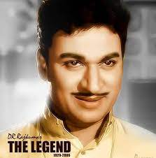
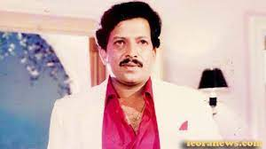
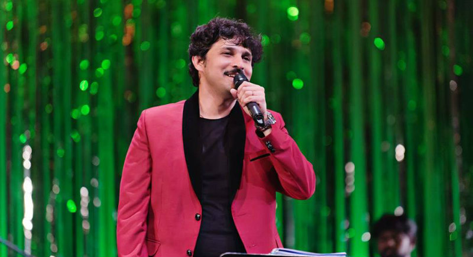

CINEMA WORLD
Welcome To Kannada Cinema
Kannada cinema, also known as Sandalwood, Kannada Film Industry or Chandanavana,[3] is the segment of Indian cinema[4] dedicated to the production of motion pictures in the Kannada language widely spoken in the state of Karnataka.[5][6][7] The 1934 film Sati Sulochana directed by Y. V. Rao was the first talkie film in the Kannada language.[8][9][10] It was also the first film starring Subbaiah Naidu and Tripuramba, and was the first motion picture screened in the erstwhile Mysore Kingdom.[11] The film was produced by Chamanlal Doongaji, who in 1932 founded South India Movietone in Bangalore.[12][13]
|
|
|
| Kannada Cinema Logo |
Kannada Video |
Kannada cinema is known for producing experimental works such as Girish Kasaravalli's Ghatashraddha (1977), which won the Ducats Award at the Manneham Film Festival Germany,[16] Dweepa (2002), which won Best Film at Moscow International Film Festival,[17][18] Singeetam Srinivasa Rao's silent film Pushpaka Vimana (1987), screened at the Cannes Film Festival and Prashanth Neel's historical drama, K.G.F: Chapter 1 (2018),[19][20] which became the first Kannada language film to have grossed ₹250 crores worldwide at the box office.[21
Kannada Cinema Wikipedia
Kannada Theaters Map
Kannada Cinema Direction
A film director controls a film's artistic and dramatic aspects and visualizes the screenplay (or script) while guiding the film crew and actors in the fulfilment of that vision. The director has a key role in choosing the cast members, production design and all the creative aspects of filmmaking.
About Legend Directors of Kannada Cinema

|

|

|
| Puttanna Kanagaal |
S Narayan |
Rakshith Shetty |
Shubraveshti Ramaswamiah Seetharama Sharma (1 December 1933 – 5 June 1985), known popularly as S. R. Puttanna Kanagal, was an Indian filmmaker known for his work in Kannada cinema. He is often considered one of India's most influential filmmakers.
S. Narayan is an Indian filmmaker, director, actor and lyricist of Kannada films. After Singeetam Srinivasa Rao, Narayan is the second director to direct Dr. Rajkumar and all his three sons. He has given many hits with Dr. Vishnuvardhan and also worked with many actors of Sandalwood. He has directed Tamil movie Jai.
Rakshit Shetty is an Indian actor and filmmaker who is best known for his work in Kannada cinema. His films are known for urban legends, Indian folklore, nonlinear storylines, extended scenes of dialogue, references to Indian mythology and a wide variety of other films.
Kannada Cinema Hero's
Rajkumar
Singanalluru Puttaswamaiah Muthuraj, better known by his stage name Dr Rajkumar, was an Indian film actor and playback singer in the Kannada cinema.
|

|
|
| DR Rajkumar |
Rajkumar Video |
Rajkumar was awarded numerous State, National and International awards. He was a recipient of the Padma Bhushan, a doctorate from Mysore University and the Karnataka Ratna, the highest civilian honour of the State of Karnataka, recognising him as a Jewel of Karnataka State.
Vishnuvardhan
Sampath Kumar (18 September 1950 – 30 December 2009), known by his stage name Vishnuvardhan, was an Indian film actor predominantly in Kannada cinema.[2] He appeared in more than 220 films all together in Kannada, Hindi, Malayalam, Tamil and Telugu.[3] He was called The Phoenix of Indian Cinema.[4][5][6] He made his debut in the 1972 film, Vamsha Vriksha, in a supporting role. The same year he played the lead role in Puttanna Kanagal's Naagarahaavu, and was recognized as 'The Angry Young Man of Kannada Cinema'.[7] He has played a variety of roles in different genres.
|

|
|
| DR Vishnuvardhan |
Vishnuvardhan Video |
As an acknowledgment to his service to Indian cinema, the state government named its annual lifetime achievement award to long-serving film personalities after Vishnuvardhan, renaming it as the Karnataka State Dr. Vishnuvardhan Award.[
Best Singers of Kannada Cinema
|
|

|
| SP Balasubrahmanyam |
Rajesh Krishnan |
Sripathi Panditaradhyula Balasubrahmanyam (4 June 1946 – 25 September 2020), also known as SPB or Balu, was an Indian playback singer, television presenter, music director, actor, dubbing artist, and film producer who worked predominantly in Telugu, Tamil, Kannada, Hindi, and Malayalam films.
Rajesh Krishnan is an Indian melody playback singer and film actor. Although he is popularly known for his works in Kannada films, he has sung 5000 songs in Kannada, 500 in Telugu and more than 250 songs in Tamil, Hindi and other languages[1] Making his mainstream debut in the film Gauri Ganesha (1991), he has sung for many feature films, devotional albums, theme albums and commercials in a career spanning over almost two decades.
Records of Kannada Cinema
- The song Baare Baare from the 1972 movie Naagarahaavu was the first slow-motion song of Indian cinema.
- The 1986 movie Anuraga Aralithu was the first Indian movie to be remade in six other languages.
- The 1986 movie Africadalli Sheela was the first Indian movie to be shot in African forests.
- The 1987 movie Ondu Muttina Kathe was the first Indian film to have an underwater action sequence shot in an ocean outside India without the help of oxygen mask.
- The 1989 movie Idu Saadhya created a record by becoming the first Indian movie to be shot within a span of 36 hours.
- The 1995 movie Om is the only Indian movie to have been re-released 550 times.
- The 2005 movie Shanti was the second Indian film to enter the Guinness Book of World Records in the Fewest actors in a narrative film category. It had only one actor with the other characters represented through voice and no physical appearance.
- The 2006 Kannada movie Mungaru Male was the first Indian movie to run for a year in a multiplex.
For more information click the below links